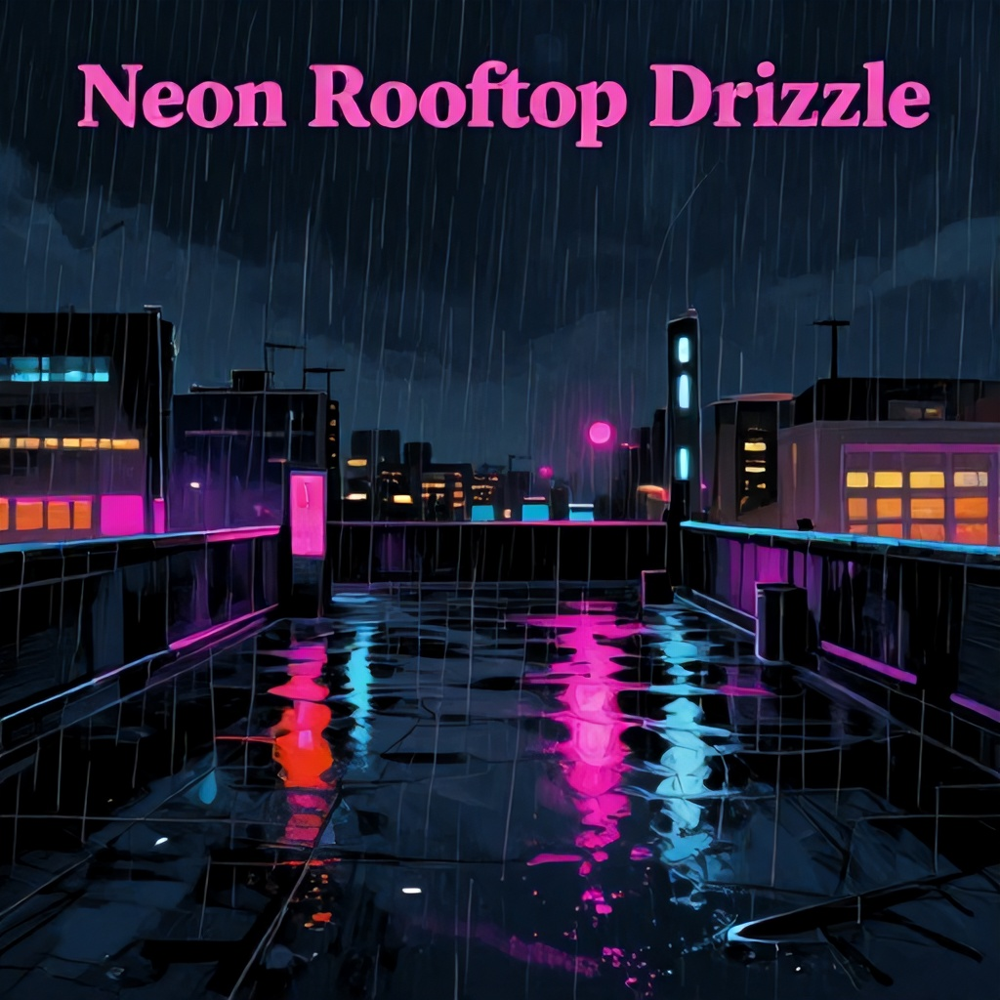

Instrumental EP · Pollen Mixtape
Neon Rooftop Drizzle
A nocturnal instrumental EP for wet asphalt and late arrivals—neon, fog, and the hush between beats.
-
01
Puddles at 3AM
Moody synth pads, muted trip-hop drums, brushed vinyl texture, 92 bpm, neon reverb and light detuned keys
-
02
Rainwire Stairwell
Minimal techno kick, wet percussion splashes, sub-bass pulses, 128 bpm, metallic hats, sidechained atmosphere
-
03
Rooftop Static Glow
Ambient downtempo with arpeggiated neon synths, distant thunder hits, 78 bpm, tape hiss, slow crescendo